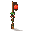
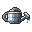
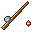
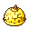
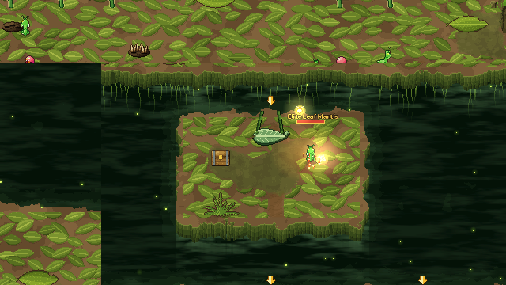
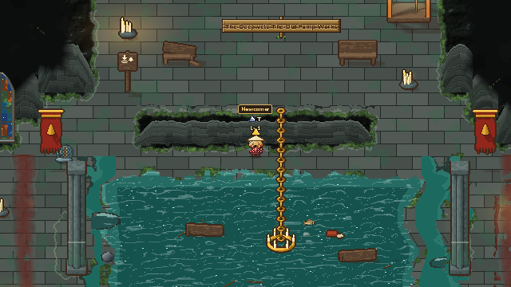

Thế giới chung online
Một tài khoản, nhân vật lưu trên máy chủ. Ngày đêm và mùa trôi theo giờ thật, người chơi khác đi lại ngay cạnh bạn.
Nông trại và phiêu lưu pixel, chơi chung với mọi người trong một thung lũng. Làm ruộng, học nghề, rồi lập tổ đội hạ những con boss biết ra chiêu.
Bonnievale là game pixel về một thung lũng nơi các xứ Mèo, Chó và những vương quốc khác từng giữ chung một lời hứa. Bạn nhận một mảnh đất nhỏ, làm quen dân làng, học nghề, rồi cùng những người chơi khác xuống hầm ngục để tìm lại ánh sáng cho thung lũng.
Mọi người ở chung một thế giới: bạn thấy người khác đi chợ, câu cá, đánh quái, và có thể rủ họ vào tổ.


Một tài khoản, nhân vật lưu trên máy chủ. Ngày đêm và mùa trôi theo giờ thật, người chơi khác đi lại ngay cạnh bạn.
Lập tổ tới 4 người. Hộ Vệ hầm ngục và boss săn có vạch đỏ, vòng đỏ báo đòn; máu boss tăng theo số người.
Chiến binh, Cung thủ, Pháp sư, Sát thủ. Lên Lv 10 thử cả ba nhánh rồi chọn một; Sách Kỹ Năng để nâng từng chiêu.

Cuốc, gieo, tưới, thu hoạch hàng chục loại cây. Cây lớn theo giờ thật, đất khô thì đứng yên chứ không chết.

Câu cá, đào mỏ, nấu ăn, bào chế, rèn. Mỗi bậc nghề mở hạt giống, công thức và thuốc mạnh hơn.
Nơi người hai xứ gặp nhau: đua lá, câu vịt, kệ hàng và những phần thưởng chỉ hội chợ mới có.
Mỗi xứ một câu chuyện riêng, đi tới đâu mở tới đó. Thẻ Tiếp theo và đom đóm luôn chỉ việc kế tiếp.

Giống, màu lông, gương mặt, áo, quần, mũ. Chọn ngay khi tạo nhân vật và thay bất cứ lúc nào.
Mỗi xứ có quê nhà, dân làng, cốt truyện và hầm ngục riêng. Đi đủ xa, bạn gặp người chơi của xứ kia.




Không dựng, không vẽ thêm: đây là bản tester đang chạy.
File .zip cho Windows 10/11 64-bit. Bấm chuột phải chọn Extract All để giải nén.
Tải bản testerNếu Windows hiện "Windows protected your PC", bấm More info rồi Run anyway. Game chưa ký số nên Windows cảnh báo, chuyện bình thường với bản thử.
Đăng ký bằng email và mật khẩu từ 8 ký tự, tạo nhân vật, chọn Xứ Mèo hoặc Xứ Chó, rồi đi theo đom đóm.
Hộp báo lỗi mở ngay trong game. Viết điều đã xảy ra, giữ ô đính kèm ảnh nếu muốn, bấm Gửi. Báo lỗi gửi kèm phiên bản, chỗ bạn đứng, nhiệm vụ, cấp, lớp và 200 dòng log cuối.

Nhận tin bản mới đầu tiên, báo lỗi, khoe nông trại, tìm bạn lập tổ đánh boss, và góp ý trực tiếp cho đội làm Bonnievale.
Có. Bản tester miễn phí hoàn toàn, không có gì phải trả tiền.
Có. Bonnievale Online lưu nhân vật trên máy chủ và mọi người chơi chung một thế giới, nên cần mạng ổn định suốt lúc chơi.
Cứ đăng nhập là bạn ở chung thế giới với mọi người. Gặp bạn trên bản đồ thì mời vào tổ (tối đa 4 người) để cùng đánh Hộ Vệ và boss săn.
Bản tester hiện chỉ có cho PC Windows. Các bản khác sẽ báo trên Discord khi sẵn sàng.
Có thể. Trước khi game ra mắt chính thức, dữ liệu bản thử nghiệm có thể được làm mới. Đội sẽ báo trước trên trang này và trên Discord.
Cảnh báo này hiện với mọi chương trình chưa được ký số. Chỉ tải game từ trang này hoặc link trong Discord chính thức, rồi bấm More info → Run anyway.
Nhấn F8 ngay trong game. Muốn kể dài hơn hay gửi video, nhắn trong kênh báo lỗi trên Discord.